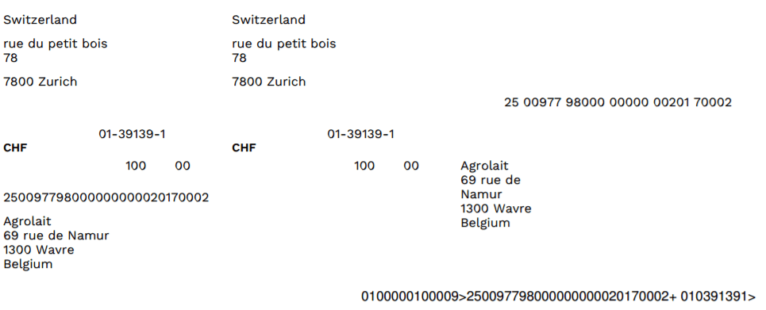

Switzerland¶
ISR (In-payment Slip with Reference number)¶
The ISRs are payment slips used in Switzerland. You can print them directly from Odoo. On the customer invoices, there is a new button called Print ISR.

Tip
The button Print ISR only appears there is well a bank account defined on the invoice. You can use CH6309000000250097798 as bank account number and 010391391 as CHF ISR reference.

Then you open a pdf with the ISR.
There exists two layouts for ISR: one with, and one without the bank coordinates. To choose which one to use, there is an option to print the bank information on the ISR. To activate it, go in and enable Print bank on ISR:

ISR reference on invoices¶
To ease the reconciliation process, you can add your ISR reference as Payment Reference on your invoices.
To do so, you need to configure the Journal you usually use to issue invoices. Go to , open the Journal you want to modify (By default, the Journal is named Customer Invoices), click en Edit, and open the Advanced Settings tab. In the Communication Standard field, select Switzerland, and click on Save.

Currency Rate Live Update¶
You can update automatically your currencies rates based on the Federal Tax Administration from Switzerland. For this, go in , activate the multi-currencies setting and choose the service you want.

Updated VAT for January 2018¶
Starting from the 1st January 2018, new reduced VAT rates will be applied in Switzerland. The normal 8.0% rate will switch to 7.7% and the specific rate for the hotel sector will switch from 3.8% to 3.7%.
How to update your taxes in Odoo Enterprise (Odoo Online or On-premise)?¶
If you have the V11.1 version, all the work is already been done, you don’t have to do anything.
If you have started on an earlier version, you first have to update the module “Switzerland - Accounting Reports”. For this, you go in .

Once it has been done, you can work on creating new taxes for the updated rates.
Tip
Do not suppress or modify the existing taxes (8.0% and 3.8%). You want to keep them since you may have to use both rates for a short period of time. Instead, remember to archive them once you have encoded all your 2017 transactions.
The creation of such taxes should be done in the following manner:
Purchase taxes: copy the origin tax, change its name, label on invoice, rate and tax group (effective from v10 only)
Sale taxes: copy the origin tax, change its name, label on invoice, rate and tax group (effective from v10 only). Since the vat report now shows the details for old and new rates, you should also set the tags accordingly to
For 7.7% taxes: Switzerland VAT Form: grid 302 base, Switzerland VAT Form: grid 302 tax
For 3.7% taxes: Switzerland VAT Form: grid 342 base, Switzerland VAT Form: grid 342 tax
You’ll find below, as examples, the correct configuration for all taxes included in Odoo by default
Tax Name |
Rate |
Label on Invoice |
Tax Group (effective from V10) |
Tax Scope |
Tag |
|---|---|---|---|---|---|
TVA 7.7% sur achat B&S (TN) |
7.7% |
7.7% achat |
TVA 7.7% |
Purchases |
Switzerland VAT Form: grid 400 |
TVA 7.7% sur achat B&S (Incl. TN) |
7.7% |
7.7% achat Incl. |
TVA 7.7% |
Purchases |
Switzerland VAT Form: grid 400 |
TVA 7.7% sur invest. et autres ch. (TN) |
7.7% |
7.7% invest. |
TVA 7.7% |
Purchases |
Switzerland VAT Form: grid 405 |
TVA 7.7% sur invest. et autres ch. (Incl. TN) |
7.7% |
7.7% invest. Incl. |
TVA 7.7% |
Purchases |
Switzerland VAT Form: grid 405 |
TVA 3.7% sur achat B&S (TS) |
3.7% |
3.7% achat |
TVA 3.7% |
Purchases |
Switzerland VAT Form: grid 400 |
TVA 3.7% sur achat B&S (Incl. TS) |
3.7% |
3.7% achat Incl. |
TVA 3.7% |
Purchases |
Switzerland VAT Form: grid 400 |
TVA 3.7% sur invest. et autres ch. (TS) |
3.7% |
3.7% invest |
TVA 3.7% |
Purchases |
Switzerland VAT Form: grid 405 |
TVA 3.7% sur invest. et autres ch. (Incl. TS) |
3.7% |
3.7% invest Incl. |
TVA 3.7% |
Purchases |
Switzerland VAT Form: grid 405 |
TVA due a 7.7% (TN) |
7.7% |
7.7% |
TVA 7.7% |
Sales |
Switzerland VAT Form: grid 302 base, Switzerland VAT Form: grid 302 tax |
TVA due à 7.7% (Incl. TN) |
7.7% |
7.7% Incl. |
TVA 7.7% |
Sales |
Switzerland VAT Form: grid 302 base, Switzerland VAT Form: grid 302 tax |
TVA due à 3.7% (TS) |
3.7% |
3.7% |
TVA 3.7% |
Sales |
Switzerland VAT Form: grid 342 base, Switzerland VAT Form: grid 342 tax |
TVA due a 3.7% (Incl. TS) |
3.7% |
3.7% Incl. |
TVA 3.7% |
Sales |
Switzerland VAT Form: grid 342 base, Switzerland VAT Form: grid 342 tax |
If you have questions or remarks, please contact our support using odoo.com/help.
Tip
Don’t forget to update your fiscal positions. If you have a version 11.1 (or higher), there is nothing to do. Otherwise, you will also have to update your fiscal positions accordingly.